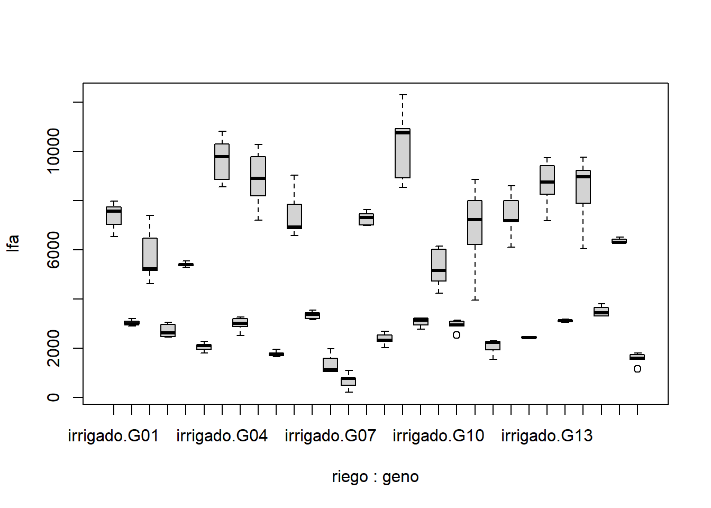

library(ggplot2)ggplot(fb, aes(x =factor(geno), y = lfa, fill =factor(riego))) +geom_boxplot()+labs(x ="Genotipo", y ="LFA", fill ="Riego") +theme_minimal() +theme(axis.text.x =element_text(angle =45, hjust =1)) +ggtitle("Boxplot de LFA por Genotipo y Riego")
Modelo linealmixto
Code
library(lme4)library(lmerTest)model <- lme4::lmer(lfa ~ riego + geno + riego*geno + (1|bloque), data = fb)anova(model)## Analysis of Variance Table## npar Sum Sq Mean Sq F value## riego 1 788556926 788556926 1433.796## geno 14 261729564 18694969 33.992## riego:geno 14 108147972 7724855 14.046plot(model)
Code
ol <-boxplot(lfa ~ riego*geno, fb)

Code
ol## $stats## [,1] [,2] [,3] [,4] [,5] [,6] [,7] [,8] [,9]## [1,] 6539.86 2900.00 4631.00 2449.59 5305.77 1811.97 8569.08 2511.13 7205.94## [2,] 7038.08 2994.58 5162.74 2487.28 5369.88 1953.50 8867.03 2889.83 8189.67## [3,] 7578.79 2999.66 5233.55 2618.85 5412.51 2107.76 9791.10 3010.27 8913.12## [4,] 7750.00 3100.00 6478.14 2966.18 5450.00 2147.55 10305.61 3218.63 9793.99## [5,] 7982.73 3203.70 7392.38 3063.35 5545.69 2274.48 10811.84 3263.70 10291.06## [,10] [,11] [,12] [,13] [,14] [,15] [,16] [,17] [,18]## [1,] 1657.64 6576.65 3159.54 1065.26 216.31 6998.00 2021.37 8533.54 2781.32## [2,] 1700.00 6857.13 3198.96 1068.97 495.83 7012.74 2278.60 8924.78 2961.78## [3,] 1771.80 6938.90 3381.68 1140.05 782.10 7310.01 2319.71 10764.71 3150.00## [4,] 1821.46 7864.08 3450.00 1607.25 811.45 7469.58 2550.51 10919.31 3235.10## [5,] 1967.49 9040.06 3550.19 1989.25 1097.98 7643.80 2697.93 12296.22 3238.41## [,19] [,20] [,21] [,22] [,23] [,24] [,25] [,26] [,27]## [1,] 4249.18 2909.10 3966.33 1556.38 6111.43 2400.00 7180.79 3062.34 6049.52## [2,] 4743.16 2909.10 6210.41 1942.23 7164.03 2425.26 8256.98 3110.00 7895.00## [3,] 5171.21 2940.95 7225.02 2237.88 7194.26 2438.98 8750.00 3120.00 8978.89## [4,] 6028.93 3096.00 8005.55 2274.26 8012.79 2480.00 9430.43 3146.19 9221.24## [5,] 6164.24 3136.07 8867.09 2301.31 8603.78 2487.78 9743.70 3191.97 9776.01## [,28] [,29] [,30]## [1,] 3318.36 6270.00 1560.00## [2,] 3326.93 6302.79 1560.00## [3,] 3449.76 6304.88 1601.06## [4,] 3664.65 6435.00 1750.00## [5,] 3811.99 6522.46 1814.84## ## $n## [1] 5 5 5 5 5 5 5 5 5 5 5 5 5 5 5 5 5 5 5 5 5 5 5 5 5 5 5 5 5 5## ## $conf## [,1] [,2] [,3] [,4] [,5] [,6] [,7] [,8]## [1,] 7075.749 2925.17 4304.092 2280.46 5355.897 1970.645 8774.603 2777.941## [2,] 8081.831 3074.15 6163.008 2957.24 5469.123 2244.875 10807.597 3242.599## [,9] [,10] [,11] [,12] [,13] [,14] [,15] [,16]## [1,] 7779.512 1685.977 6227.392 3204.296 759.7027 559.0837 6987.208 2127.579## [2,] 10046.728 1857.623 7650.408 3559.064 1520.3973 1005.1163 7632.812 2511.841## [,17] [,18] [,19] [,20] [,21] [,22] [,23] [,24]## [1,] 9355.38 2956.873 4262.688 2808.887 5956.579 2003.268 6594.528 2400.301## [2,] 12174.04 3343.127 6079.732 3073.013 8493.461 2472.492 7793.992 2477.659## [,25] [,26] [,27] [,28] [,29] [,30]## [1,] 7920.843 3094.428 8041.772 3211.128 6211.461 1466.806## [2,] 9579.157 3145.572 9916.008 3688.392 6398.299 1735.314## ## $out## [1] 2541.12 1176.63## ## $group## [1] 20 30## ## $names## [1] "irrigado.G01" "sequia.G01" "irrigado.G02" "sequia.G02" "irrigado.G03"## [6] "sequia.G03" "irrigado.G04" "sequia.G04" "irrigado.G05" "sequia.G05" ## [11] "irrigado.G06" "sequia.G06" "irrigado.G07" "sequia.G07" "irrigado.G08"## [16] "sequia.G08" "irrigado.G09" "sequia.G09" "irrigado.G10" "sequia.G10" ## [21] "irrigado.G11" "sequia.G11" "irrigado.G12" "sequia.G12" "irrigado.G13"## [26] "sequia.G13" "irrigado.G14" "sequia.G14" "irrigado.G15" "sequia.G15"library(inti)model <-remove_outliers(data = fb , formula = lfa ~ riego + geno + riego*geno + (1|bloque) , plot_diag = T )model## $data## $data$raw## # A tibble: 150 × 5## index riego geno bloque lfa## <chr> <chr> <chr> <chr> <dbl>## 1 1 sequia G01 II 2900 ## 2 2 sequia G02 IV 2619.## 3 3 irrigado G01 III 7579.## 4 4 sequia G02 I 2450.## 5 5 irrigado G03 II 5413.## 6 6 irrigado G04 V 9791.## 7 7 irrigado G01 I 7038.## 8 8 irrigado G05 IV 9794.## 9 9 sequia G06 II 3199.## 10 10 sequia G05 I 1658.## # ℹ 140 more rows## ## $data$clean## index riego geno bloque lfa## 1 1 sequia G01 II 2900.00## 2 2 sequia G02 IV 2618.85## 3 3 irrigado G01 III 7578.79## 4 4 sequia G02 I 2449.59## 5 5 irrigado G03 II 5412.51## 6 6 irrigado G04 V 9791.10## 7 7 irrigado G01 I 7038.08## 8 8 irrigado G05 IV 9793.99## 9 9 sequia G06 II 3198.96## 10 10 sequia G05 I 1657.64## 11 11 irrigado G01 II 7982.73## 12 12 sequia G07 II 1097.98## 13 13 irrigado G08 II 7310.01## 14 14 irrigado G06 III 6576.65## 15 15 irrigado G09 III 10764.71## 16 16 irrigado G10 II 5171.21## 17 17 sequia G11 I 1556.38## 18 18 sequia G12 III 2425.26## 19 19 irrigado G07 I 1065.26## 20 20 irrigado G04 II 10811.84## 21 21 irrigado G13 II 9743.70## 22 22 irrigado G14 III 7895.00## 23 23 irrigado G04 IV 10305.61## 24 24 sequia G04 V 3218.63## 25 25 sequia G08 V 2697.93## 26 26 sequia G04 III 3263.70## 27 27 sequia G01 IV 2994.58## 28 28 irrigado G10 I 6164.24## 29 29 irrigado G08 V 7469.58## 30 30 irrigado G02 V 5233.55## 31 31 irrigado G07 III 1607.25## 32 32 irrigado G08 I 6998.00## 33 33 irrigado G14 V 8978.89## 34 34 irrigado G03 I 5545.69## 35 35 sequia G13 III 3120.00## 36 36 sequia G01 V 2999.66## 37 37 sequia G03 I 2274.48## 38 38 irrigado G15 III 6302.79## 39 39 irrigado G03 IV 5305.77## 40 40 irrigado G09 IV NA## 41 41 irrigado G11 II NA## 42 42 sequia G03 V 2147.55## 43 43 sequia G11 III 2301.31## 44 44 irrigado G06 V NA## 45 45 sequia G05 V 1771.80## 46 46 sequia G08 IV 2021.37## 47 47 irrigado G11 IV 8005.55## 48 48 sequia G11 II 1942.23## 49 49 irrigado G10 III 6028.93## 50 50 sequia G06 IV 3550.19## 51 51 sequia G09 I 3238.41## 52 52 irrigado G11 I 6210.41## 53 53 sequia G11 IV 2237.88## 54 54 irrigado G15 IV 6270.00## 55 55 irrigado G13 IV 9430.43## 56 56 sequia G14 V 3664.65## 57 57 irrigado G02 IV NA## 58 58 irrigado G09 II NA## 59 59 irrigado G02 III 5162.74## 60 60 sequia G08 III 2550.51## 61 61 irrigado G06 II 6938.90## 62 62 sequia G13 IV 3062.34## 63 63 sequia G14 III 3449.76## 64 64 sequia G04 II 2511.13## 65 65 irrigado G11 III NA## 66 66 irrigado G07 II 1068.97## 67 67 irrigado G08 IV 7643.80## 68 68 sequia G05 IV 1821.46## 69 69 irrigado G04 I 8569.08## 70 70 irrigado G11 V 7225.02## 71 71 irrigado G12 I 7194.26## 72 72 sequia G14 IV 3318.36## 73 73 sequia G07 III 811.45## 74 74 irrigado G03 III 5450.00## 75 75 sequia G01 I 3100.00## 76 76 sequia G04 I 3010.27## 77 77 sequia G03 II 2107.76## 78 78 irrigado G15 II 6304.88## 79 79 sequia G12 IV 2480.00## 80 80 sequia G12 I 2400.00## 81 81 sequia G08 I 2319.71## 82 82 sequia G05 II 1700.00## 83 83 sequia G02 II 2966.18## 84 84 sequia G10 I 3136.07## 85 85 sequia G15 I 1814.84## 86 86 irrigado G07 V 1140.05## 87 87 sequia G10 V 2909.10## 88 88 sequia G13 II 3110.00## 89 89 sequia G07 V 495.83## 90 90 sequia G03 III 1953.50## 91 91 sequia G15 IV 1750.00## 92 92 sequia G13 I 3191.97## 93 93 sequia G03 IV 1811.97## 94 94 irrigado G10 V 4249.18## 95 95 sequia G13 V 3146.19## 96 96 sequia G09 II 3235.10## 97 97 irrigado G14 IV NA## 98 98 irrigado G01 V 6539.86## 99 99 sequia G01 III 3203.70## 100 100 irrigado G06 IV 7864.08## 101 101 sequia G04 IV 2889.83## 102 102 irrigado G15 V 6522.46## 103 103 irrigado G13 III NA## 104 104 irrigado G02 II 6478.14## 105 105 sequia G08 II 2278.60## 106 106 irrigado G04 III 8867.03## 107 107 sequia G02 V 3063.35## 108 108 sequia G06 V 3159.54## 109 109 irrigado G15 I 6435.00## 110 110 irrigado G13 V 8750.00## 111 111 irrigado G05 V 8189.67## 112 112 sequia G09 III 2961.78## 113 113 sequia G09 V 2781.32## 114 114 sequia G10 II 2940.95## 115 115 irrigado G07 IV 1989.25## 116 116 irrigado G05 I NA## 117 117 irrigado G02 I 4631.00## 118 118 sequia G05 III 1967.49## 119 119 irrigado G12 II NA## 120 120 sequia G15 III 1601.06## 121 121 irrigado G13 I 8256.98## 122 122 sequia G14 II 3811.99## 123 123 sequia G12 II 2438.98## 124 124 sequia G15 II 1560.00## 125 125 irrigado G09 V NA## 126 126 sequia G06 I 3381.68## 127 127 sequia G09 IV 3150.00## 128 128 sequia G15 V 1176.63## 129 129 irrigado G14 I NA## 130 130 sequia G06 III 3450.00## 131 131 irrigado G01 IV 7750.00## 132 132 irrigado G12 III 7164.03## 133 133 sequia G12 V 2487.78## 134 134 irrigado G12 V 8603.78## 135 135 sequia G11 V 2274.26## 136 136 irrigado G12 IV 8012.79## 137 137 irrigado G09 I 10919.31## 138 138 sequia G02 III 2487.28## 139 139 sequia G07 I 216.31## 140 140 irrigado G08 III 7012.74## 141 141 irrigado G06 I 6857.13## 142 142 irrigado G10 IV 4743.16## 143 143 irrigado G03 V 5369.88## 144 144 sequia G07 IV 782.10## 145 145 irrigado G05 III 8913.12## 146 146 sequia G14 I 3326.93## 147 147 sequia G10 III 3096.00## 148 148 irrigado G14 II 9221.24## 149 149 irrigado G05 II NA## 150 150 sequia G10 IV 2541.12## ## ## $outliers## index riego geno bloque lfa resi res_MAD rawp.BHStud## 40 40 irrigado G09 IV 8533.54 -1821.843 -5.382198 0.00000007358196186## 41 41 irrigado G11 II 3966.33 -2921.009 -8.629420 0.00000000000000000## 44 44 irrigado G06 V 9040.06 1586.844 4.687948 0.00000275958224139## 57 57 irrigado G02 IV 7392.38 1545.147 4.564765 0.00000500053779318## 58 58 irrigado G09 II 12296.22 1976.049 5.837760 0.00000000529071831## 65 65 irrigado G11 III 8867.09 2014.449 5.951205 0.00000000266175237## 97 97 irrigado G14 IV 9776.01 1324.207 3.912051 0.00009151556329234## 103 103 irrigado G13 III 7180.79 -1489.351 -4.399930 0.00001082858978219## 116 116 irrigado G05 I 7205.94 -1577.072 -4.659080 0.00000317625961999## 119 119 irrigado G12 II 6111.43 -1338.287 -3.953649 0.00007696837896431## 125 125 irrigado G09 V 8924.78 -1360.784 -4.020111 0.00005817084375703## 129 129 irrigado G14 I 6049.52 -2238.868 -6.614197 0.00000000003735745## 149 149 irrigado G05 II 10291.06 1379.845 4.076419 0.00004573459036372## adjp bholm out_flag## 40 0.00000007358196186 0.00001074296643 OUTLIER## 41 0.00000000000000000 0.00000000000000 OUTLIER## 44 0.00000275958224139 0.00040013942500 OUTLIER## 57 0.00000500053779318 0.00071507690442 OUTLIER## 58 0.00000000529071831 0.00000077773559 OUTLIER## 65 0.00000000266175237 0.00000039393935 OUTLIER## 97 0.00009151556329234 0.01262914773434 OUTLIER## 103 0.00001082858978219 0.00153765974907 OUTLIER## 116 0.00000317625961999 0.00045738138528 OUTLIER## 119 0.00007696837896431 0.01069860467604 OUTLIER## 125 0.00005817084375703 0.00814391812598 OUTLIER## 129 0.00000000003735745 0.00000000556626 OUTLIER## 149 0.00004573459036372 0.00644857724128 OUTLIER## ## $diagplot
Quarto enables you to weave together content and executable code into a finished document. To learn more about Quarto see https://quarto.org.
Running Code
When you click the Render button a document will be generated that includes both content and the output of embedded code. You can embed code like this:
Code
1+1## [1] 2
You can add options to executable code like this
## [1] 4
The echo: false option disables the printing of code (only output is displayed).